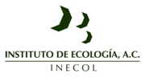

Primary Partner: Instituto de Ecologia, INECOL
Completed: March 2011
Models: Water supply
Maps: Source, sink, use, and flow maps for above ecosystem services
Highlights: Application of ARIES to a watershed for which high quality data and process-based hydrological models are available for integration in the ARIES system. Testing of ARIES' applicability for ecosystem services-based decision-making in a small watershed where payments for ecosystem services are in place.
Lessons Learned:
More than 72% of Veracruz's original forest has been converted to pastureland and agriculture. Still, the remaining natural vegetation harbors high levels of biodiversity. Forest fragmentation and land conversion are now occurring in unique, high-elevation montane cloud forest, one of the most important land cover types for water provision in the region. Water resources are under stress in the basin and flooding is becoming increasingly and flooding likely. This has led to unrest over water resources between neighboring states and municipalities with large population centers on their territory.
A majority of people living in ten poor communities in the predominantly forested Gavilanes watershed (located above the city of Coatepec on the eastern slopes of Cofre de Perote volcano) derive their livelihood from small-scale agricultural production, forestry, ranching, and extraction of forest products. The area also provides water to the city of Coatepec and agricultural users. The conversion of upstream forest to agriculture and ranching affects biodiversity and hydrologic benefits for downstream beneficiaries. ARIES modeling in La Antigua targets data and model development related to water provision and regulation (e.g., land cover, land use management practices, location of beneficiaries) to support conservation of such benefits while maintaining production for the diverse economic sectors in the region.
Two preliminary meetings in Xalapa, Mexico between INECOL
faculty and UVM/CI ARIES researchers were followed by a one-week
training session at UVM to preliminarily develop a water supply
model. A subsequent visit from INECOL personnel to UVM helped
fine-tune the model and provide data prior to the release of the
first modeling results in February 2011 to an audience of INECOL
scientists and local decision-makers. The ecosystem service
models rely on state of the art data related to the hydrology of
the montane cloud forest in the region. State-funded monitoring
projects have produced important datasets relating hydrology to
socio-economic benefits. This effort integrates with ongoing
work to assess ecosystem services in the region conducted by
Conservation International and its partners, with the goal of
identifying where natural resources management policies could
most strategically reduce deforestation and biodiversity
loss.
February 17-18, 2011 (Xalapa,Veracruz): Assessment of Hydrological Service Flows in La Antigua Watershed